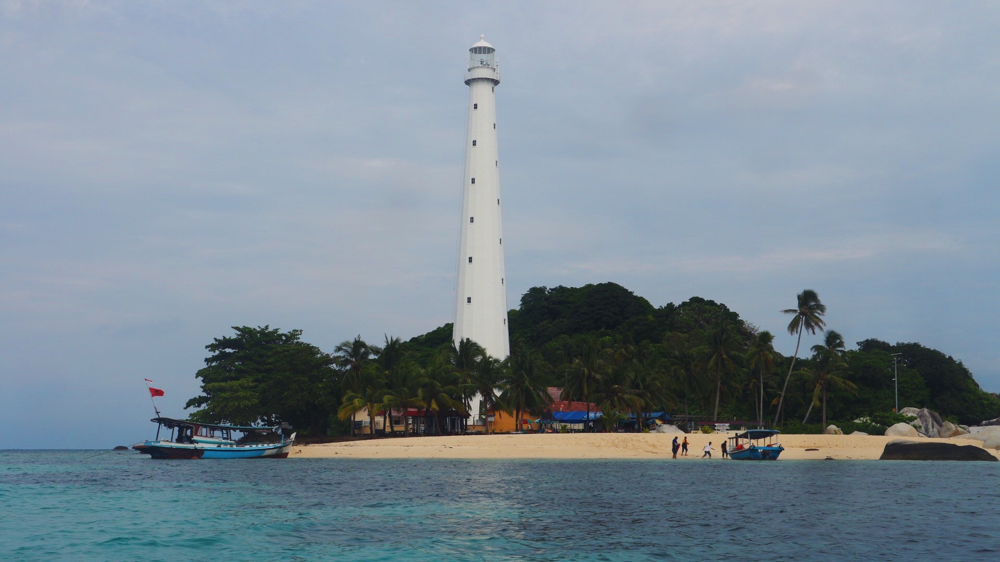
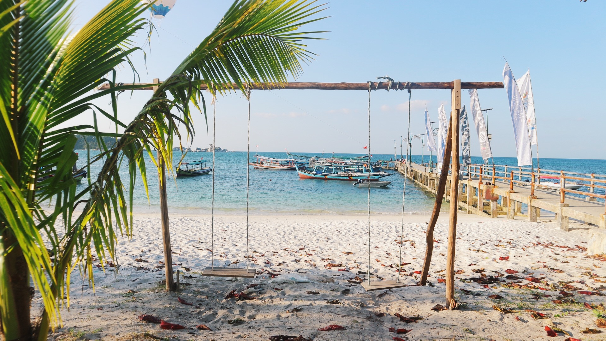
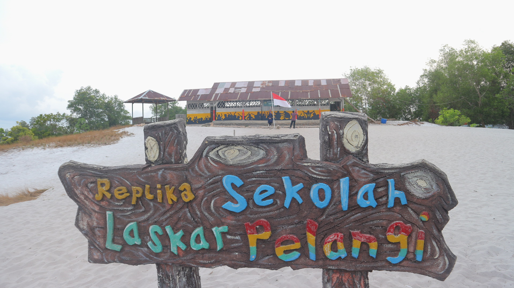

WISATA BELITUNG
PULAU LENGKUAS

Pulau Lengkuas adalah salah sebuah pulau di Provinsi Kepulauan Bangka Belitung. Letaknya di sebelah utara Pantai Tanjung Kelayang, Kecamatan Sijuk, Kabupaten Belitung. Pulau ini merupakan satu dari ratusan pulau yang mengelilingi Pulau Belitung. Daya tarik utama di pulau ini adalah sebuah mercusuar tua yang dibangun oleh pemerintah Kolonial Belanda pada tahun 1882.
Hingga saat ini, mercusuar tersebut masih berfungsi sebagai penuntun lalu
lintas kapal yang melewati atau keluar masuk Pulau Belitung

Pantai Tanjung Kelayang merupakan salah satu pantai yang terletak di Kepulauan Bangka Belitung. Lokasinya berada di Kecamatan Sijuk dan berjarak sekitar 27 kilometer dari Tanjung Pandan yang merupakan ibu kota Kabupaten Belitung.
Pantai ini memiliki puluhan batu granit raksasa, yang bentuknya sangat mirip dengan kepala burung garuda. Menurut cerita rakyat setempat, batu tersebut dipercaya memiliki kekuatan mistis. Nama “Kelayang” bisa dikatakan merupakan nama yang diambil dari salah satu jenis burung yang terdapat di pantai ini.
Pada tanggal 15 Maret 2016, Tanjung Kelayang ditetapkan sebagai Kawasan Ekonomi Khusus (KEK) melalui Peraturan Pemerintah Nomor 6 Tahun 2016, dengan kegiatan utama di bidang pariwisata. KEK Tanjung Kelayang dengan lahan seluas 324,4 hektare merupakan KEK ke-9 yang ditetapkan pemerintah sampai tahun 2016.

SD yang menjadi latar belakang tempat syuting Laskar Pelangi merupakan sebuah replika sekolah dimana Ikal sempat bersekolah. Lokasinya ada di Kawasan Gantong, Belitung Timur. Lokasi ini cukup jauh dari pusat kota Belitung, Tanjung Pandan.
Jadi bagi yang datang dari Jakarta, butuh waktu lama untuk bisa sampai ke lokasi wisata ini.
Dari Kota Tanjung Pandan, pengunjung harus menempuh jarak sekitar 100 km jauhnya. Butuh sekitar satu jam sebelum bisa sampai ke SD Muhammadiyah ini.
Namun jalanan Belitung yang mulus dan sepi akan memudahkan perjananan ke sini. Disepanjang jalan, anda juga akan disuguhi pemandangan di Belitung yang membuat pikiran dan tubuh lebih rileks.
Lokasi tepat SD ini ialah di pinggir pantai Belitung Timur. Alhasil, pemandangan ini pun akan dihiasi dengan pasir putih yang menawan. Maka dari itulah, pergi ke tempat ini akan sekaligus bisa menikmati pemandangan alam dan juga hamparan pasir putihnya
Ketika masuk ke sini, maka akan ada kelas yang menjadi tempat belajar anak—anak. Jumlahnya hanya ada dua. Kondisinya pun bisa dibilang tak layak sebagai sekolah. Lantainya dari tanah dengan dinding papan kusam.